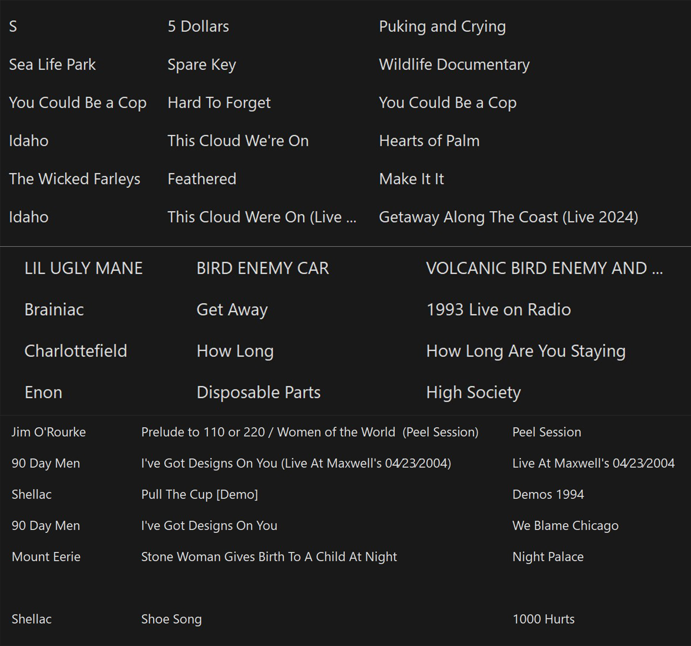

06.07.2026 [RADIO]
00:57:58

Date 06.07.2026
Type Radio Mix
Duration 00:57:58
Archive Status Preserved
First TEANF Radio broadcast assembled following a three-year hiatus. Compiled from current listening, archival material, and ongoing TEANF projects.
← Radio